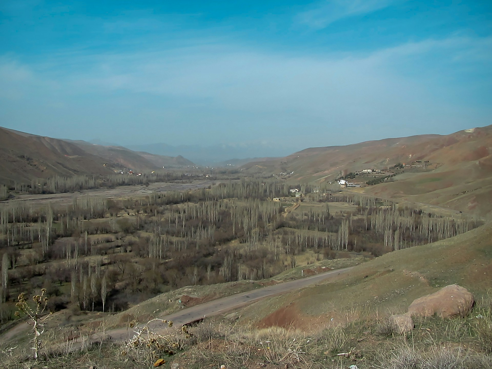

The Silent Front: Water
Strikes on Gulf desalination plants reveal just how fragile water security is in a region already under severe climate stress.
The Gulf's Paradox
March 2026. As conflicts escalated across the Middle East, the world's eyes turned to missiles and fighter jets. But on the quieter front of this war, there was a very different target: water.
The Gulf region sits on some of the world's most enormous oil and gas reserves — wealth that shapes the global economy. Yet beneath that same surface lies an equally serious absence: fresh water. The world's richest oil nations are, at the same time, among its most water-scarce.
Water Scarcity
Annual rainfall across the Gulf averages between 70 and 130 millimeters — and in some areas, it barely rains at all. According to NASA, the Middle East has been experiencing its worst drought in 900 years since 1998. Seven of the world's ten most water-stressed countries are in this region, where annual water withdrawals reach up to eight times the available renewable supply. The UN World Water Development Report 2024 found that 83% of the region's population lives under extremely high water stress. Bahrain, Kuwait, Oman, and Qatar rank among the most critical cases.
Desalination: A Vital Solution, a Fragile System
Faced with these conditions, Gulf states have been turning to desalination — converting seawater into drinking water — since 1938. Today, 90% of Kuwait's drinking water, 86% of Oman's, and 70% of Saudi Arabia's comes from these plants. The Gulf alone accounts for roughly 40% of the world's desalinated water, with over 400 facilities operating along its coastline. But the system is deeply fragile: entire cities depend on just a handful of large plants. Most of them run alongside power stations — meaning an attack on the energy grid can knock out water production just as quickly. This vulnerability isn't new. During the 1990–1991 Gulf War, Iraqi forces deliberately destroyed much of Kuwait's desalination capacity. That precedent has come back into sharp focus.
Attacks: A Region Under Threat
The March 2026 conflict struck water infrastructure directly. The US launched missiles from the Jufair base in Bahrain, hitting a desalination plant on Iran's Qeshm Island at the entrance to the Strait of Hormuz. According to Iran's Foreign Ministry, the strike disrupted water supply to 30 villages, forcing thousands to turn to unsafe water sources and significantly raising the risk of waterborne illness in the area. Kaveh Madani, Director of the UN University's Institute for Water, Environment and Health, called the attack "a wake-up call for the region."
But Qeshm was not the only target. In the same period, Iran was reported to have damaged a desalination plant in Bahrain with a drone. Missile debris landed near a power and water complex in Fujairah, UAE. A strike on Dubai's Jebel Ali port came dangerously close to the city's 43 desalination units, which produce over 600 million cubic meters of water annually. And in Kuwait, debris from an intercepted drone caused a fire at the Doha West Power and Water Station.
Analysts point out that none of this is coincidental: water facilities are fixed, coastal, high-value targets — strategically hard to resist. With Iran reportedly capable of producing around 10,000 drones per month, the scale of the threat becomes even clearer.
These attacks also raise serious questions under international law. The Geneva Conventions explicitly prohibit attacks on water facilities essential to civilian survival.
Regional and Global Implications
The impact of these strikes extends well beyond the region. Iran's closure of the Strait of Hormuz disrupted roughly 20% of global oil trade, forcing tankers to reroute around Africa. Since about a third of the world's fertilizer trade also passes through the strait, global food prices have come under significant pressure. Experts warn that the real crisis may still be coming — in the form of acute water shortages over the months ahead. Ed Cullinane of Global Water Intelligence puts it plainly: with ongoing strikes, an economic crisis, and a serious water shortage all converging, it is hard to even imagine how this summer will unfold.
References
- UN World Water Development Report, 2024
- NASA Jet Propulsion Laboratory — Middle East Drought Study, 2022
- World Resources Institute — Aqueduct Water Risk Atlas, 2023
- Global Water Intelligence — Gulf Desalination Report
- Baker Institute / Rice University — GCC Water Security Analysis
- CSIS — Water and Conflict in the Middle East
- Pacific Institute — Water Conflict Chronology, 2023
- UN University Institute for Water, Environment and Health — Kaveh Madani, 2026
- Sembcorp Industries — Fujairah F1 Statement, March 2026
- Geneva Conventions Additional Protocol I, Article 54 — ICRC
- ScienceDirect — Desalination and Climate Change, 2025
- Peter Gleick — Water as a Weapon of War, Springer, 2019

Your first AI post title here
A short description of your article goes here. Two or three sentences to draw the reader in.
Read More
Comments